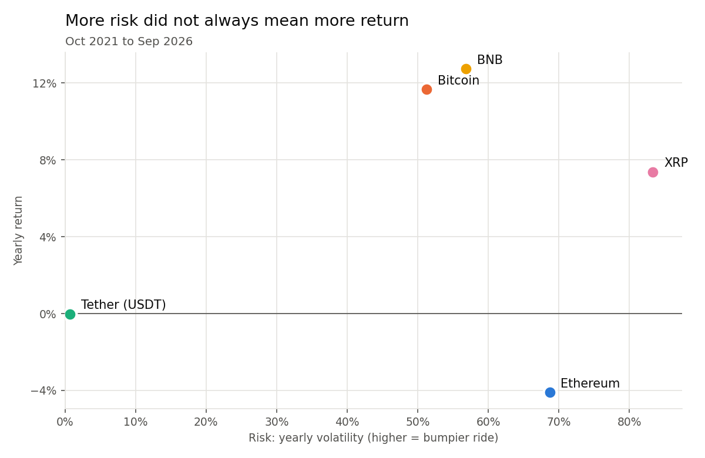
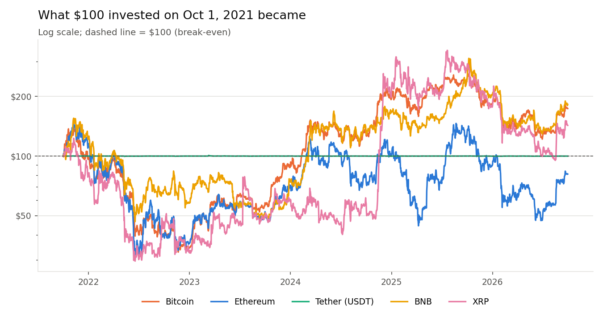
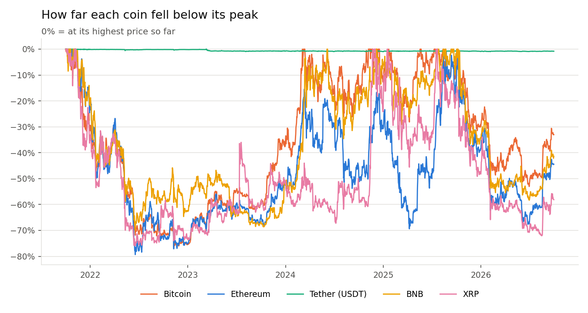
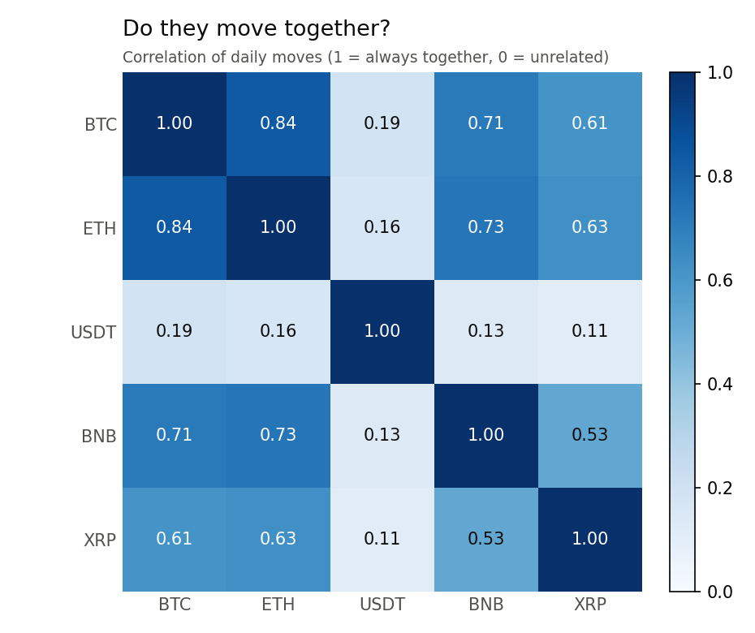

5 coins · 5 years · days of prices
Did the riskier coins pay off more?
I compared Bitcoin, Ethereum, Tether, BNB and XRP from October 2021 to September 2026 to see if the coins with the bumpiest prices also earned the most.
Short answer: not in this period. XRP was the riskiest coin but earned less than Bitcoin and BNB. Ethereum was riskier than Bitcoin and still lost money. Five coins over one period cannot prove a general rule, but here, more risk did not bring more reward.
What I found
- More risk did not mean more return. XRP had the biggest price swings ( yearly volatility) but grew . BNB was calmer () and grew .
- Ethereum lost money despite high risk. It swung more than Bitcoin ( vs ) and ended , while Bitcoin ended .
- Every coin except Tether crashed 70–80% at some point. All four peaked in November 2021 and hit bottom in 2022. Bitcoin's worst fall was .
- Tether held steady but earned nothing. Tether stayed within about 1% of $1. A 3-month U.S. Treasury bill paid about a year over the same period.
- The last 12 months were rough. From October 2025 to September 2026, Bitcoin fell and XRP fell .
- The coins tend to move together. On a given day, Bitcoin and Ethereum usually moved in the same direction (correlation ), so holding both lowered risk less than you might expect.
Risk vs. return

If more risk always paid off, the dots would rise from left to right. They don't: XRP sits furthest right (most risk) but below BNB and Bitcoin.
The numbers
Total return = change from first to last day. Per year = the steady yearly rate that gives the same result. Not sure what a term means? See Key terms.
More charts

The same $100 ended up anywhere from about $ to $, depending on the coin.

All four volatile coins spent most of 2022 more than 50% below their peak.

Darker = moves more closely together. Tether barely moves with the rest.
Look at each coin
About this project
I built this project on my own, from getting the data to publishing this site:
- Data: downloaded 1,826 days of prices for 5 coins and the 3-month T-bill rate from Yahoo Finance with Python.
- Analysis: calculated return, volatility, maximum drawdown, Sharpe ratio and correlation for two time windows (5 years and the last 12 months).
- Charts: made 34 charts with Matplotlib, 6 for each coin plus 4 that compare all five.
- Website: built this site with plain HTML, CSS and JavaScript and published it on GitHub Pages. The numbers on the site are read from the analysis output, so they always match the code.
Tools: Python (pandas, NumPy, Matplotlib), HTML/CSS/JavaScript, Git, GitHub Pages. See the code on GitHub.